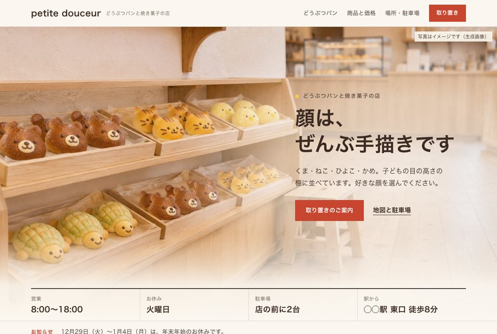
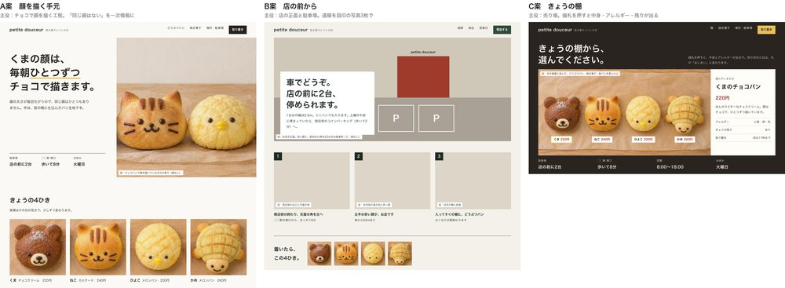
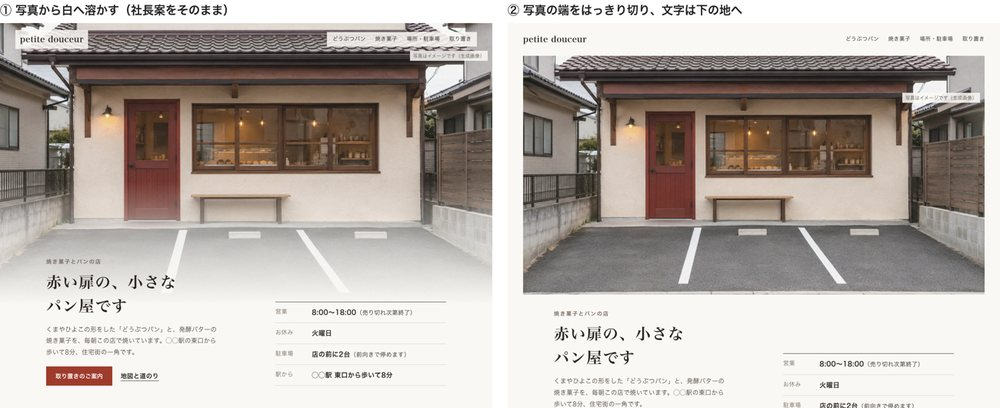
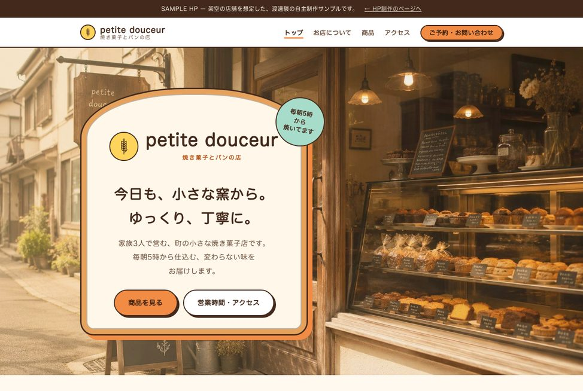
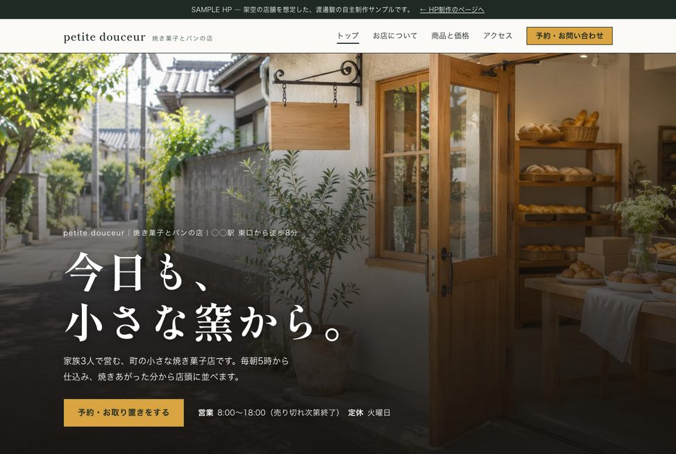

パン屋さんのホームページが、
できるまで。
架空のパン屋「petite douceur」のホームページを例に、今の制作の進め方をまとめました。実在のお店のサイトを観察するところから、3つの案を比べ、試作して見比べ、全ページに組み込むまで。実際のご依頼でも、同じ流れで進めます。
OUTLINE
FLOW
進め方は、8つの段階です。
1と2は中身を決める段階、3〜6は形を決めて作る段階、7と8は公開したあとの段階です。どれも、このサンプルのいちばん新しい作り直し（2026年11月）を例にしています。
- 実在のお店のサイトを、先に観察する観察の記録
- ページの数と、載せることを決めるページごとの中身
- 前の版の問題を、言葉にする直すべき点
- 3つの案を出し、1つを選んでいただく案の比較表
- 最初の画面だけ試作し、並べて見比べる比較画像
- 決まった形を、サイト全体に組み込む全ページ・スマホでの確認
- 公開したファイルを、1つずつ照合する照合の結果
- 表示の速さを測り、直す計測の結果
STEP 01
実在のお店のサイトを、先に観察する。
実在するパン屋さんのサイトを16件開き、13件の画面を見て記録しました（3件はセキュリティ対応のため停止中でした）。最初の画面の写真、見出しの書き方、駐車場や営業時間の載せ方、お知らせの更新の頻度を見ています。
| 観察したこと | 今回の設計 |
|---|---|
| 駐車場と営業時間を最初の画面に出している店は、13件中0件。載せていても、ページの下のほう | 最初の画面に「営業・お休み・駐車場・駅から」の4項目を置く |
| お知らせを毎日更新している店は、13件中1件。11月なのに「9月の営業予定」が残っている店もあった | サイトには変わらない情報だけを置く。毎日の焼き上がりはInstagramに任せ、お知らせは期限が来ると自動で消える作りに |
| 本物の店らしさは、売り場・厨房・外観の写真から伝わっていた | 写真を店の売り場・手元・外観で撮り直す（このサンプルでは生成画像） |
| 「かわいいだけじゃない」など、見る人の疑いに先回りする言葉や、工程を数字で見せる店が目に留まった | 「顔は、ぜんぶ手描きです」「1日におよそ120個」と、具体的な事実で書く |
STEP 02
ページの数と、それぞれに載せることを決める。
前の版の5ページを、4ページにまとめました。「お店について」の中身は、トップの「顔を描く仕事」と「よく聞かれること」に移しています。
| ページ | 載せること |
|---|---|
| トップ | 4項目、お知らせ1枠、どうぶつパン4種、子ども連れで来やすい理由、季節の黒板、Instagram、よく聞かれること、外観と駐車場 |
| 商品と価格 | どうぶつパン・焼き菓子・パンの価格、アレルギー表示（表示義務のある8品目） |
| 場所と駐車場 | 駐車場の台数と停め方、駅からの3つの手順、略図、お店の情報、営業許可 |
| 取り置き・ご予約 | フォーム、個人情報の扱い、よく聞かれること |
STEP 03
前の版の問題を、言葉にする。
6つ目の版（店のガラス戸）を、観察した実在のサイトと並べて見直しました。
| 見つけた問題 | なぜ問題か |
|---|---|
| 毎日の更新を前提にした作り | 時刻で変わる札や、焼き上がりの時刻ごとの棚は、お店の毎日に合わせて書き換え続ける必要があります。家族3人の店では続けにくく、止まると古い情報が残ります |
| 見出しと段の形がくり返し | どの見出しも同じ調子で、段の組み方も同じでした。お店の言葉より、型が前に出ていました |
| 写真が整いすぎている | どの写真も同じ光と台で、売り場や手元がなく、実在するお店に見えにくい状態でした |

STEP 04
3つの案を出し、1つを選んでいただく。
主役の違う3つの案を、最初の画面と次の段だけ試作して並べました。実際のご依頼では、ここでお客様に選んでいただきます。
| 案 | 中身 | 気になる点 |
|---|---|---|
| A 顔を描く手元 | チョコで顔を描く工程を主役にする | 店の雰囲気や駐車場は、最初の画面で伝わりにくい |
| B 店の前から | 店の正面と駐車場、道順の写真から始める | パンとおいしさが、最初の画面に出ない |
| C きょうの棚 | 売り場の棚の写真に値札を重ね、押すと中身と残りが出る | 「きょうの残り」は、毎日の更新が必要になる |
いったんCが選ばれましたが、試作を見て「毎日の残りを載せるのは、お店の負担が大きい」という意見が出ました。STEP 01で見た「更新が止まったサイト」と同じことになるため、残りの表示はやめ、値札で中身とアレルギーを見せる形だけを残しました。あわせて、お店の売りが違えば最初の画面も変わるという話になり、売りの違う3店（子ども連れ・薪窯・イートイン）を作り分けることにしました。

STEP 05
最初の画面だけ試作し、並べて見比べる。
写真をページいっぱいに使い、写真の中に文字を置く見せ方にしました。ただ、どの写真にも文字を重ねられるわけではありません。写真の中で文字を置きたい面の明るさを測り、文字の色と置き場所を決めています。たとえば外観の写真は、白く溶かすと灰色が濁ったので、暗いアスファルトの上に白い文字を置く形にしました。

STEP 06
決まった形を、サイト全体に組み込む。
形が決まってから、4ページすべてに組み込みます。組み込んだあとは、スマホ（360・375・414px）からパソコン（1440px）までの幅で、横へのはみ出し、12px未満の文字、押しにくい小さなボタン、画像の読み込み、リンク切れを確かめました。フォームは、誤りの表示から確認・修正・受け付けまで、最後まで操作しています。
| 組み込んだこと | 理由 |
|---|---|
| 写真をページいっぱいに、文字は写真の落ち着いた面に | 店内・外観の写真で、お店の空気を伝えるため。文字の読みやすさは、写真の明るさを測って確かめました |
| 最初の画面に4項目 | 営業・お休み・駐車場・駅からを、最初の画面に。スマホ（375px以上の幅）では、下の固定ボタンより上に収めました |
| 値札を押すと、中身とアレルギー | 毎日の更新はいりません。変わらない情報だけで「選ぶ楽しさ」を出すため |
| 黒板は季節ごと、毎日の情報はInstagram | お店が書き換えるのは、お知らせ1行と季節の品だけで済むように |
| お知らせは期限つき | 期限が過ぎると自動で消え、古い情報が残りません |
| アレルギー表示と、予約フォームの個人情報の扱い | 安心して選んでいただくため。フォームで集めるのは、名前・電話・日にち・内容だけです |
STEP 07
公開したファイルを、1つずつ照合する。
公開したあと、手元のファイルと公開中のファイルが同じかを、1つずつ照合します。画面を見るだけでは、上げ忘れや古いファイルの残りに気づきにくいためです。
7つ目の版では、3店の12ページと画像、HP制作のページ、この事例ページを合わせて134ファイルを公開しました。1つずつ中身を照合し、134ファイルすべてが一致しました。アップロードしたフォルダの名前がそのままサイトに残っていないこと（前に一度あった失敗です）も確かめています。
6つ目の版では、15ファイルのうち事例ページのシェア用の画像1枚が反映されていませんでした。次の公開で上げ直し、すべて一致することを確かめました。
STEP 08
表示の速さを測り、直す。
Googleの計測ツール「PageSpeed Insights」で、公開中の3店のトップページをスマホの条件で測りました。写真をページいっぱいに使っていますが、スマホでは小さい写真を読み込む作りにしているため、表示の速さは3店とも95点以上でした。
いちばん大きな要素が表示されるまでの時間（LCP）は、2.5〜2.9秒でした。見やすさ・使いやすさは、1回目は3店とも96点でした。小さな見出しの文字と背景の色の差が足りないと指摘されたので、見出しの色を濃くし、アレルギー表の印の色も見直して、文字と背景の差をすべて基準（4.5対1）以上にしました。公開し直して測ると、3店とも100点になりました。
※2026年11月20日、公開中の各トップページを、直す前と直した後に1回ずつ計測した値です。直した後の表示の速さは、petite douceur 97点（LCP 2.4秒）、灰と麦 96点（2.7秒）、午後の椅子 96点（2.7秒）でした。計測する環境や日によって変わります。サンプルは架空のお店のため、検索結果には出さない設定にしています（そのためSEOの点数は低く出ます）。
6つ目の版では、1回目の91点から、スマホで写真を2種類読み込んでいた所を直して96点にしました（2026年11月15日）。
HISTORY
これまでの版。
このサンプルは、公開したあとも見直しを続けています。最初はポップな作りでしたが、見返すたびに「生成AIで作ったサイトによくある形」が残っていることに気づき、作り直してきました。今の形は7つ目の版です。





写真はすべて画像生成AIで作ったイメージです。
NEXT
実際のご依頼でも、同じ流れで進めます。
観察する → 中身を決める → 問題を言葉にする → 3つの案から選んでいただく → 試作を見比べる → 全体に組み込む → 公開後に照合し、測って直す。お店の方にお話をうかがいながら、この順番で一緒に作っていきます。更新をどこまでお店で続けられるかも、最初にうかがいます。